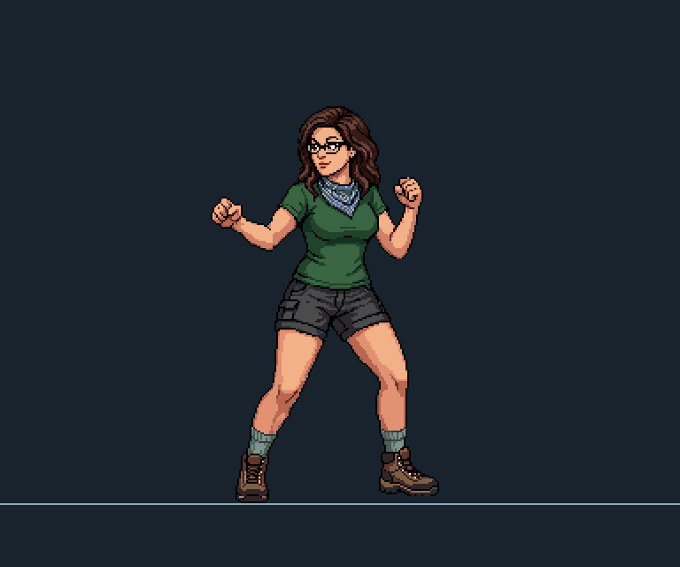
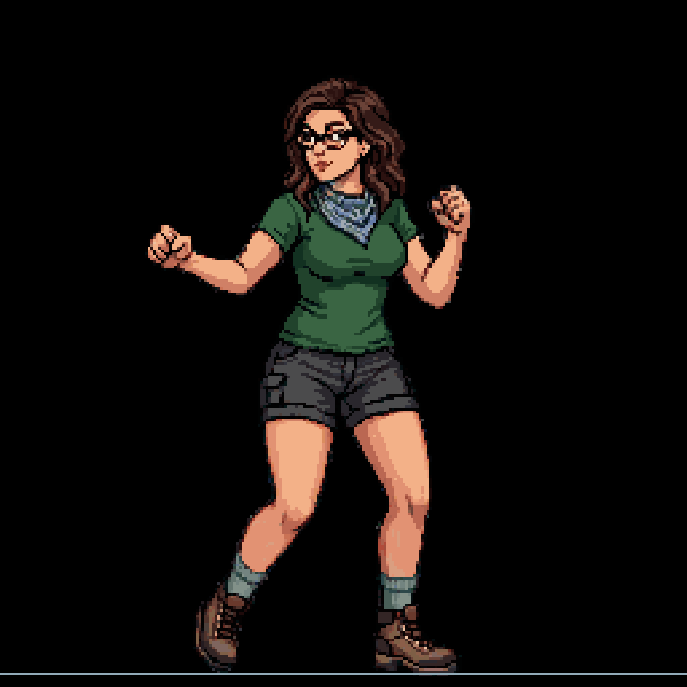

1. Original walk · generated order
Original pilot · frames 0 → 8

The first walk cycle as PixelLab returned it.
View its contact sheetCompare the four preserved walk previews. Options 1 and 2 use the same original generated frames in different playback orders; options 3 and 4 are separate walk-only generations. These remain source-art previews, not runtime animations.

The first walk cycle as PixelLab returned it.
View its contact sheet
A review-only frame-order change; the generated pixels are the same as option 1.
View original pilot detailsA dedicated retry aimed at stepping toward her screen-left facing.
View its contact sheet
The latest retry, with the foot direction called out explicitly.
View its contact sheetChoose by option number. I have not marked a walk approved or integrated any of these into the game.